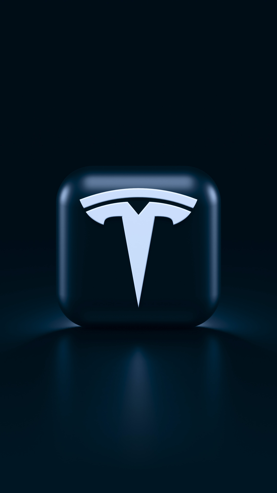

남아프리카 공화국 태생 미국의 기업인이다. 테슬라, 스페이스X를 포함, 수 많은 기업들을 연쇄로 창업했다
둘째라면 서러울 수준의 일 중독자로 유명하다. 머스크는 20대 초반에 동생과 창업을 시작할 때부터 밤낮 구분없이 일에 집착했고 페이팔을 만들어서 억만장자가 되었을 때도 피터 틸의 쿠데타와 격무로 인해 신혼여행조차 가지 못했다.
2000년 12월에 첫 번째 아내였던 저스틴과 모잠비크로 2주일 간 여행을 떠난게 공식적으로 알려진 유일한 장기휴가기록인데, 운 나쁘게도 아프리카에서 가장 치사율이 높은 열대열 말라리아에 걸려 열흘 이상 사경을 헤맸다.당시 머스크는 몸무게가 20kg이 넘게 빠졌으며, 머스크를 치료한 전문의는 하루만 늦었다면 치료제인 독시사이클린이 통하지 않고 죽었을 것이라고 말했다고 한다.
